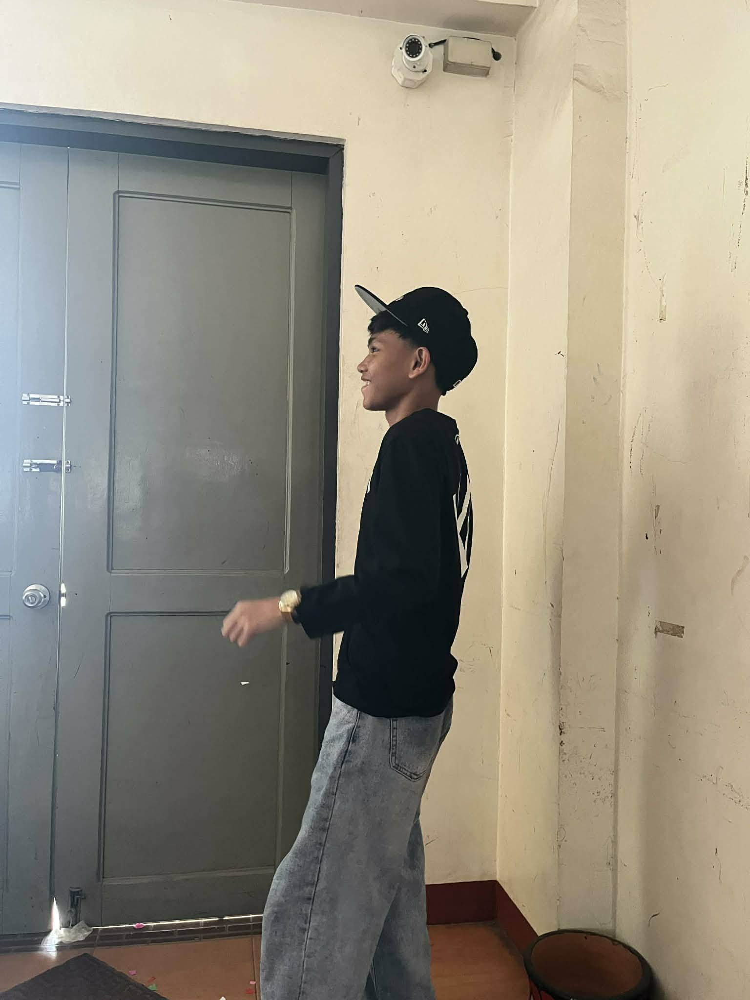

Welcome to my webpage! This page shows my journey in school from the first day until today. It includes my experiences, challenges, achievements, and lessons learned throughout the school year.

Hello! My name is ________. I am a Grade ___ student. I enjoy watching videos, listening to music, and spending time with my friends. My dream is to finish my studies and achieve my goals in the future.
This school year gave me many new experiences. I met new classmates, learned new lessons, and participated in different activities that helped me grow as a student.
One of the challenges I faced was managing my time and understanding difficult lessons. Sometimes the activities were hard, but I kept trying and practicing.
I am proud that I completed my projects and improved my performance in school. I became more responsible and confident in my abilities.
I learned that hard work, patience, and perseverance are important to achieve success. Mistakes help us learn and become better.